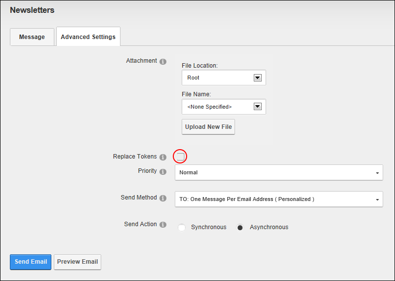

Sending Newsletters in a User's Preferred Language
How to send a newsletter to user's in their preferred language using the Newsletter module. Multiple languages must be installed and enabled on this site to display the Language Filter field.
Important. When you select a Language Filter, only users associated with that language will receive a newsletter. E.g. If you select English (United States) as the language filter, then only users who have selected English (United States) as their Preferred Locale in their profile will receive the newsletter. Users who have selected English (Australia) will not receive a newsletter. If a user has not set a preferred language, they will only receive newsletters sent to the default site language.
- Navigate to Admin > Advanced Settings >
 Newsletters - OR - Go to a Newsletters module.
Newsletters - OR - Go to a Newsletters module.
- Select the Message tab and complete all fields and enter the message into your Editor. See other tutorials in this section for full details.
- At Language Filter, beside the language(s) to receive this newsletter. If no language is selected then no filter is applied and all users will receive this newsletter.
- Select the Advanced Settings tab and then set these required settings:
- At Replace Tokens?, .
- At Send Method, select To: One Message Per Email Address ( Personalized ).

- To set any of the optional Advanced Settings, See "Sending a Basic Newsletter"
- Click the Send Email link. This displays either a Successful or Not Successful message. For Synchronous send action, the message doesn't display until after all emails have been sent. For Asynchronous send action, the message displays once the send action has successfully commenced.
- Repeat Steps 2-6 to send the newsletter in other languages.